Chapter 6 Introducing project datasets
Week 7 tutorial goals: * Learning to use the project datasets + Canadian Election Study 2025 + Varieties of Democracy (VDem) + World Values Survey (Wave 7) + Asian Barometer (Wave 5)
6.2 Overview: Use of data sets
This is the general approach we will take to use the datasets for the project assignment.
Step 1: Select one of the four data sets
Each data set focuses on a different type of data. You will be selecting variables from one dataset for your term project. Take a look at the code book and decide which data set you want to use.
6.3 Canadian Election Study 2025
Look at the codebook, which can be found in the same folder as the dataset.
Step 3: Trim down your data set
The CES is one survey of Canadians in one year, so we don’t need to select a year or a country.
Step 4: Examine the univariate distribution and bivariate relationship
Look at the summary statistics
Note that the ordinal variables are measured as numerical variables.
## cps25_news_cons cps25_govt_confusing
## Min. :1.000 Min. :1.000
## 1st Qu.:3.000 1st Qu.:2.000
## Median :4.000 Median :3.000
## Mean :3.645 Mean :2.597
## 3rd Qu.:5.000 3rd Qu.:3.000
## Max. :7.000 Max. :5.000Examine the variables
Bar chart for ordinal variables. Remember to change the numerical variable into a factor with factor().
ggplot(ces_select,aes(x=factor(cps25_news_cons))) + # factor() gives each answer its own bar
geom_bar()
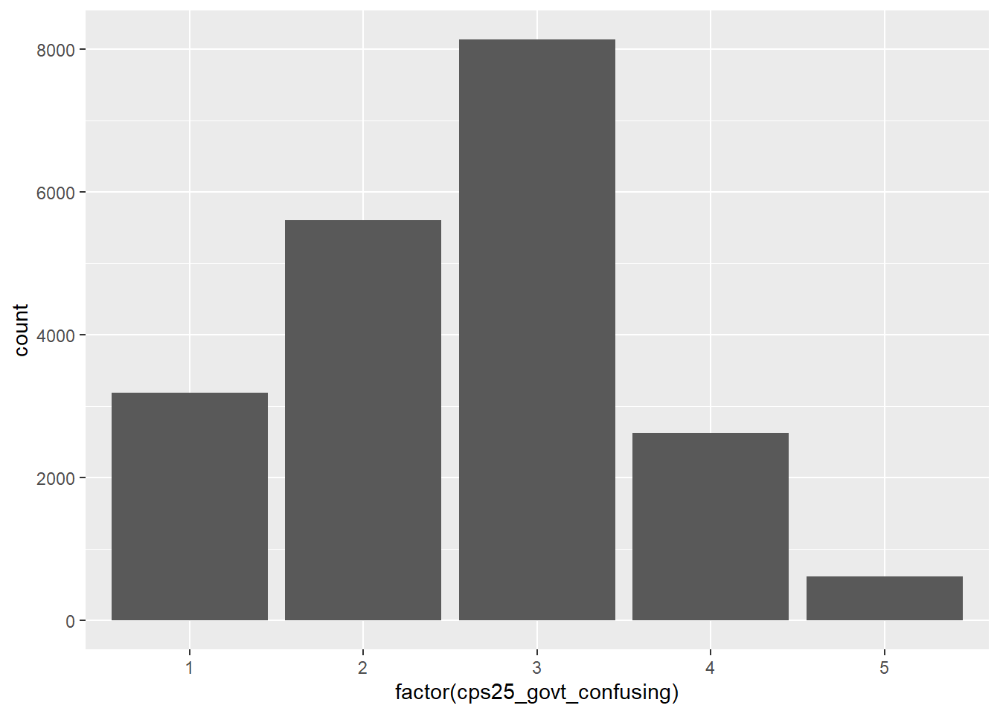
Replace nominal categories not found on the ordinal scale to NA
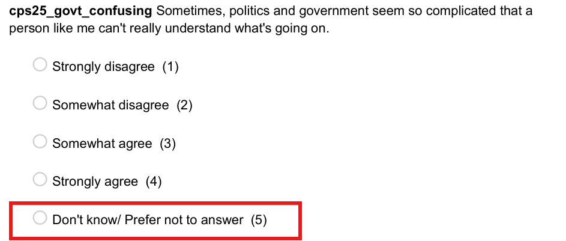
What should we do with don’t know or refused?
Use the if_else() function to make a new variable and set to NA.
Bivariate relationship
If both variables are nominal/ordinal, we can use a stacked bar chart.
ces_select |>
# is.na() is TRUE when a value is missing, so "== FALSE" keeps people who answered.
# The comma means both conditions must be true. This only affects the plot:
# ces_select itself does not change, because we don't save the result with <-
filter(is.na(news_cons) == FALSE, is.na(govt_confusing) == FALSE) |>
ggplot(aes(x=factor(news_cons),fill=factor(govt_confusing))) +
geom_bar(position="fill") + # "fill" makes every bar the same height, so it shows proportions
theme_bw()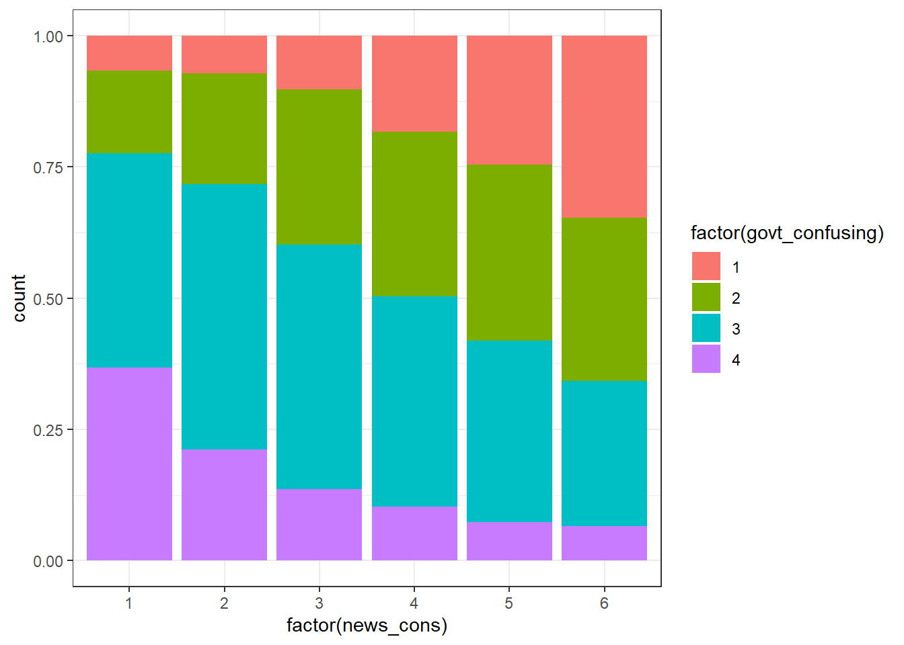
6.4 VDem
Look at the codebook, which can be found in the same folder as the dataset.
Step 2: Select your variables
Select the variables you want and assign them to the object my_vars. I’ve selected:
- Country name
- Country ID
- Year
- Political corruption index (v2x_corr)
- GDP per capita (e_gdppc)
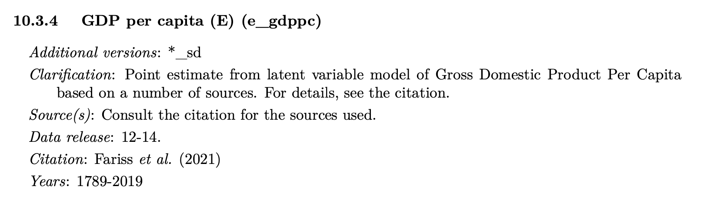
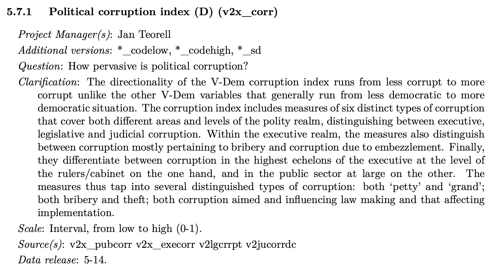
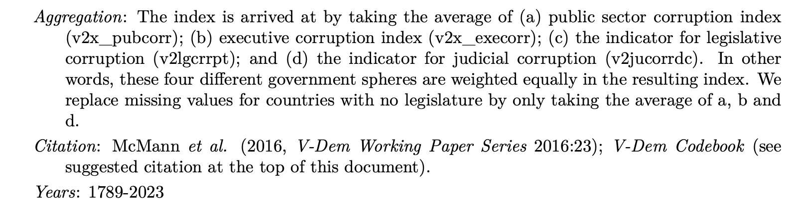
Step 3: Trim down the data set (select a year)
Select a year for analysis and use the filter function to extract the data for that year.
Note that the VDem file in your project folder is a reduced version of the original dataset.
Step 4: Examine the univariate distribution and bivariate relationship
Look at the summary statistics
## country_name country_id year v2x_corr
## Length:179 Min. : 3.00 Min. :2019 Min. :0.0020
## Class :character 1st Qu.: 51.50 1st Qu.:2019 1st Qu.:0.2190
## Mode :character Median : 96.00 Median :2019 Median :0.5300
## Mean : 99.12 Mean :2019 Mean :0.4906
## 3rd Qu.:145.00 3rd Qu.:2019 3rd Qu.:0.7475
## Max. :236.00 Max. :2019 Max. :0.9560
##
## e_gdppc
## Min. : 0.735
## 1st Qu.: 4.060
## Median :11.017
## Mean :17.827
## 3rd Qu.:25.777
## Max. :92.389
## NA's :5Univariate: Examine each variable
Plot histograms because both of the variables are interval/numerical measures.
If you choose a variable with few categories, use a bar chart.
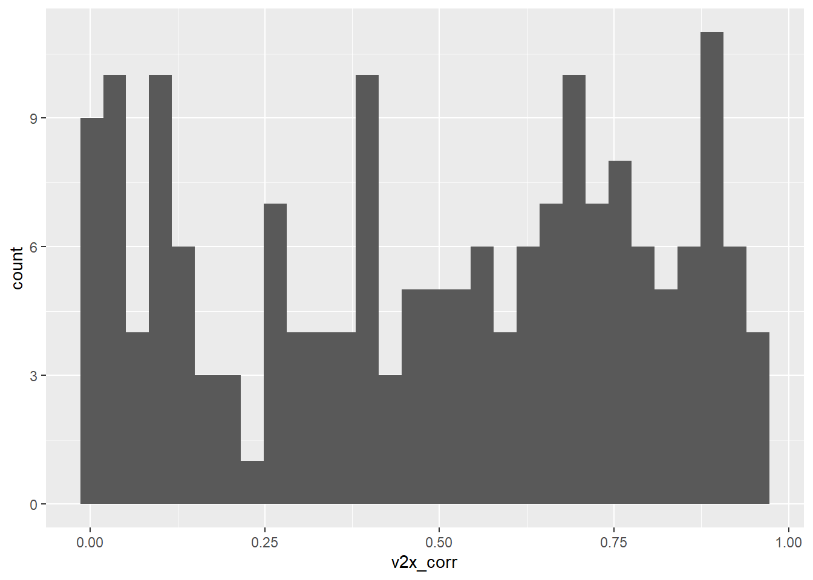
6.5 World Values Survey (Wave 7, 2017-2022)
Step 3: Trim down your data set
For the WVS data set, select one country
WVS dataset includes a collection of individual surveys in multiple countries. As such, it creates a nested data structure, where we would expect individual-level factors to be confounded by country-level differences. For simplicity, we explore variations within countries.
Step 4: Examine the univariate distribution and bivariate relationship
The response categories contain a mix of ordinal and nominal categories.
## B_COUNTRY_ALPHA Q73 Q236
## Length:4018 Min. :1.000 Min. :1.000
## Class :character 1st Qu.:2.000 1st Qu.:2.000
## Mode :character Median :3.000 Median :2.000
## Mean :2.602 Mean :2.487
## 3rd Qu.:3.000 3rd Qu.:3.000
## Max. :4.000 Max. :4.000Replace nominal categories not found on the ordinal scale to NA
Make all the negative codes (don’t know, no answer, etc.) NA.
- Create new variables, don’t change the originals!
Examine the variables
Examine the variables to make sure they are as you expect them to be after the transformation.
## B_COUNTRY_ALPHA Q73 Q236 confidence_parliament
## Length:4018 Min. :1.000 Min. :1.000 Min. :1.000
## Class :character 1st Qu.:2.000 1st Qu.:2.000 1st Qu.:2.000
## Mode :character Median :3.000 Median :2.000 Median :3.000
## Mean :2.602 Mean :2.487 Mean :2.602
## 3rd Qu.:3.000 3rd Qu.:3.000 3rd Qu.:3.000
## Max. :4.000 Max. :4.000 Max. :4.000
## experts_decide
## Min. :1.000
## 1st Qu.:2.000
## Median :2.000
## Mean :2.487
## 3rd Qu.:3.000
## Max. :4.000wvs_canada |>
filter(is.na(confidence_parliament) == FALSE) |>
ggplot(aes(x=factor(confidence_parliament))) +
geom_bar()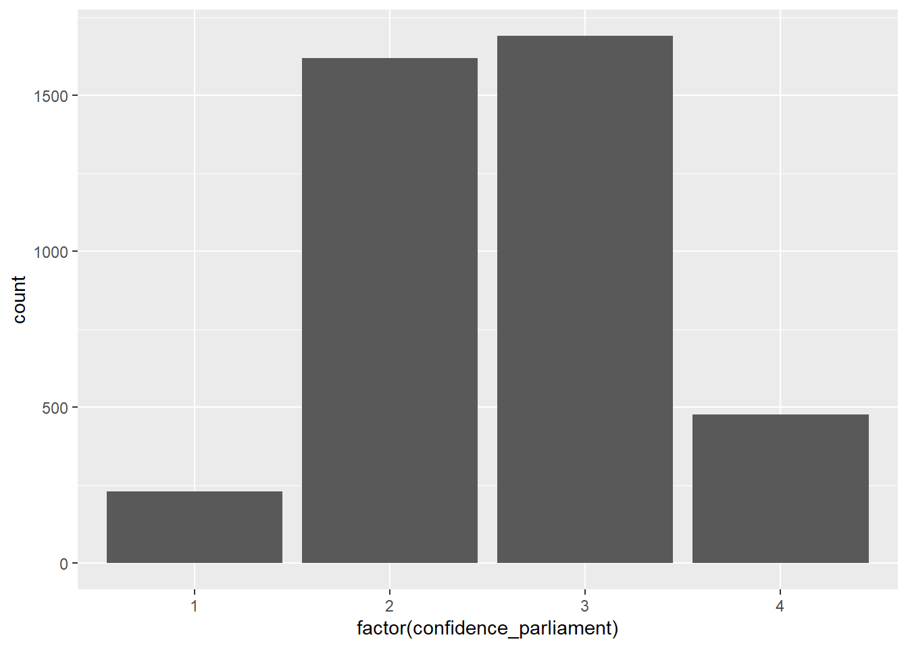
wvs_canada |>
filter(is.na(experts_decide) == FALSE) |>
ggplot(aes(x=factor(experts_decide))) +
geom_bar()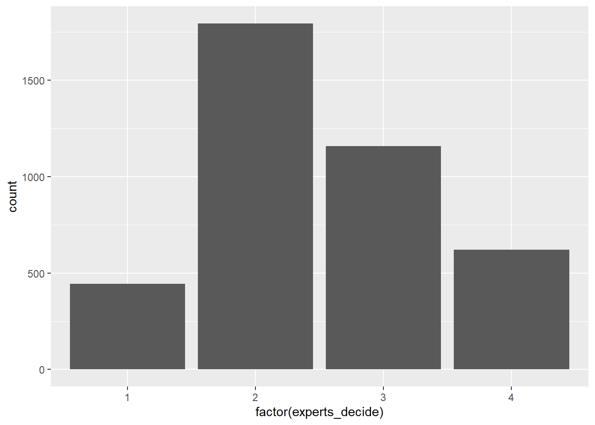
tab_xtab(var.col=wvs_canada$confidence_parliament, var.row=wvs_canada$experts_decide,
show.col.prc = TRUE)|
Political system: Having experts, not government, make decisions according to wh |
Confidence: Parliament |
Total | |||
|---|---|---|---|---|---|
| A great deal | Quite a lot | Not very much | None at all | ||
| Very good |
42 18.3 % |
164 10.1 % |
171 10.1 % |
67 14 % |
444 11.1 % |
| Fairly good |
85 37 % |
700 43.2 % |
829 49 % |
180 37.7 % |
1794 44.6 % |
| Fairly bad |
62 27 % |
493 30.5 % |
470 27.8 % |
133 27.8 % |
1158 28.8 % |
| Very bad |
41 17.8 % |
262 16.2 % |
221 13.1 % |
98 20.5 % |
622 15.5 % |
| Total |
230 100 % |
1619 100 % |
1691 100 % |
478 100 % |
4018 100 % |
χ2=51.496 · df=9 · Cramer’s V=0.065 · p=0.000 |
wvs_canada |>
filter(is.na(confidence_parliament) == FALSE, is.na(experts_decide) == FALSE) |>
ggplot(aes(x=factor(confidence_parliament),fill=factor(experts_decide))) +
geom_bar(position="fill") +
theme_bw()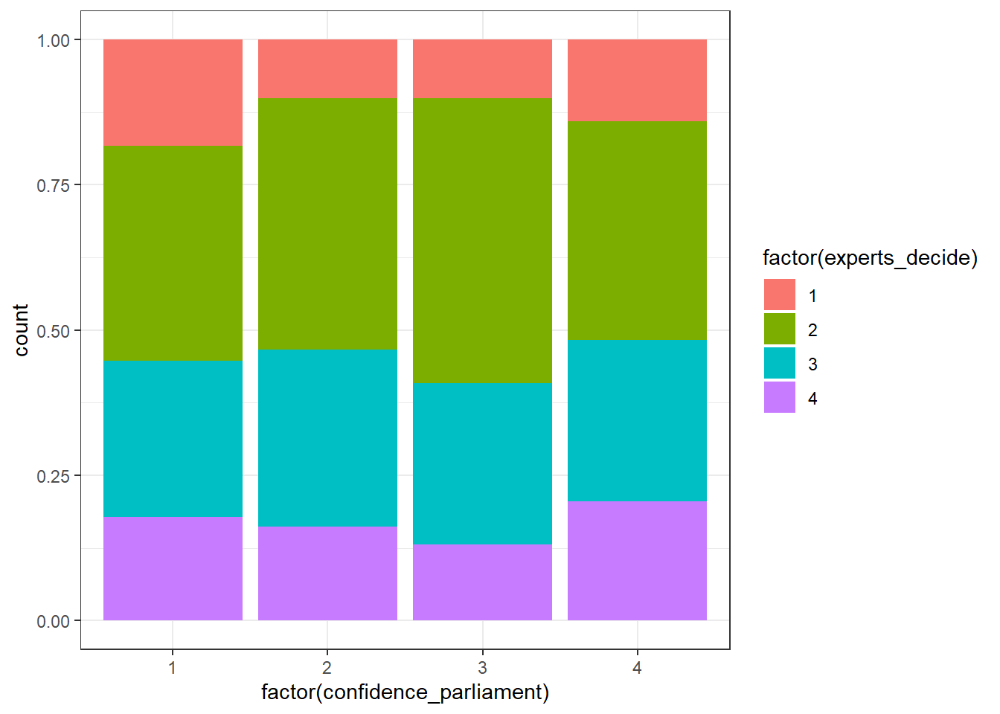
wvs_canada |>
filter(is.na(confidence_parliament) == FALSE, is.na(experts_decide) == FALSE) |>
ggplot(aes(x=factor(confidence_parliament),fill=factor(experts_decide))) +
geom_bar(position="fill") +
theme_bw() +
xlab("Lack of Confidence in Parliament") +
ylab("Proportion") +
scale_fill_manual(name="Expert versus Govt", #legend label
values = c("navyblue","blue","skyblue","grey"), #color specification
labels = c("Very Good","Fairly Good", "Fairly Bad", "Very Bad"))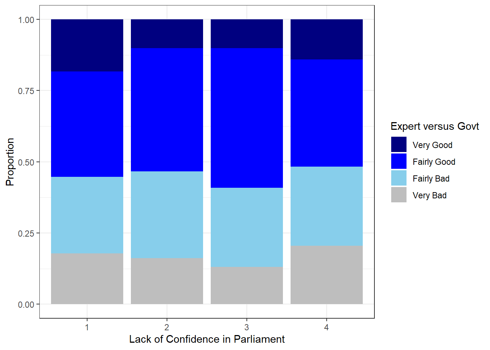
Other countries
United States
read_rds("Project/WVS/WVS_Cross-National_Wave_7_rds_v6_0.rds") |>
select(all_of(my_vars)) |>
filter(B_COUNTRY_ALPHA=="USA") |>
mutate(confidence_parliament=if_else(Q73<0,
NA,
Q73),
experts_decide=if_else(Q236<0,
NA,
Q236)) |>
filter(is.na(confidence_parliament) == FALSE, is.na(experts_decide) == FALSE) |>
ggplot(aes(x=factor(confidence_parliament),fill=factor(experts_decide))) +
geom_bar(position="fill") +
theme_bw() +
xlab("Lack of Confidence in Congress") +
ylab("Proportion") +
scale_fill_manual(name="Expert versus Govt", #legend label
values = c("navyblue","blue","skyblue","grey"), #color specification
labels = c("Very Good","Fairly Good", "Fairly Bad", "Very Bad"))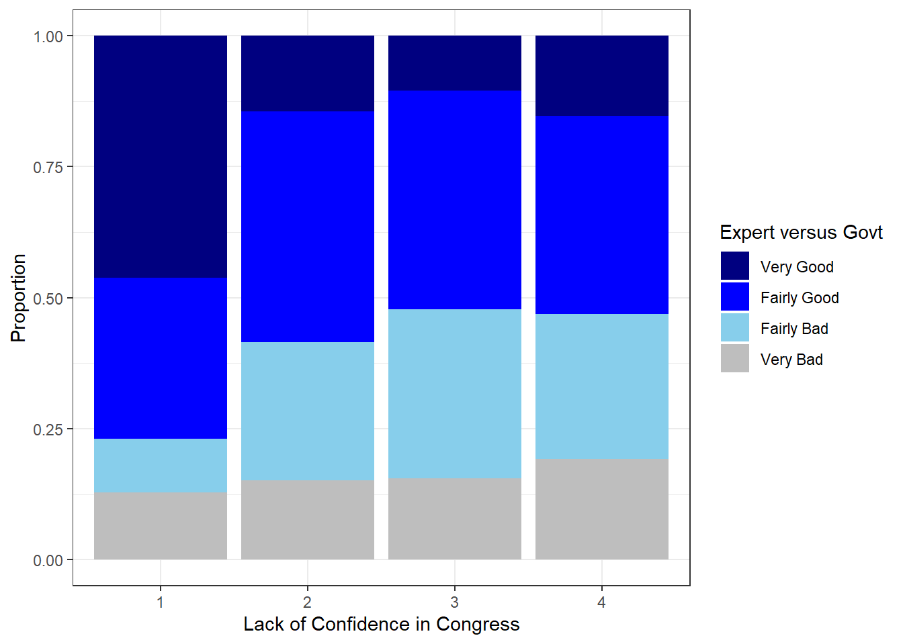
Japan
read_rds("Project/WVS/WVS_Cross-National_Wave_7_rds_v6_0.rds") |>
select(all_of(my_vars)) |>
filter(B_COUNTRY_ALPHA=="JPN") |>
mutate(confidence_parliament=if_else(Q73<0,
NA,
Q73),
experts_decide=if_else(Q236<0,
NA,
Q236)) |>
filter(is.na(confidence_parliament) == FALSE, is.na(experts_decide) == FALSE) |>
ggplot(aes(x=factor(confidence_parliament),fill=factor(experts_decide))) +
geom_bar(position="fill") +
theme_bw() +
xlab("Lack of Confidence in Parliament") +
ylab("Proportion") +
scale_fill_manual(name="Expert versus Govt", #legend label
values = c("navyblue","blue","skyblue","grey"), #color specification
labels = c("Very Good","Fairly Good", "Fairly Bad", "Very Bad"))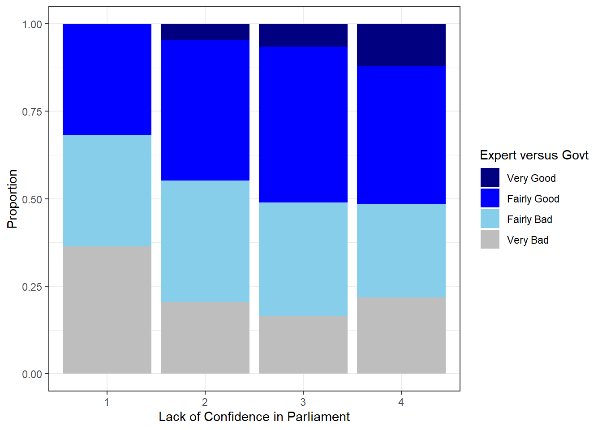
6.6 Asian Barometer (Wave 5, 2018-2021)
Step 2: Select your variables
Look at the codebook and choose your variables. I have chosen the following
Independent variable: Views toward the US
175 Does the United States do more good or harm to Asia?
184 General speaking, the influence the United States has on our country is?
DV: Views toward democracy (1 strongly agree - 4 strongly disagree)
169 Democratic regimes are indecisive and full of problemsStep 3: Trim down your data set
For the Asian Barometer data set, select one country
ab_korea <- read_dta("Project/asianbarometer_wave5/20230504_W5_merge_15.dta") |>
select(all_of(my_vars)) |>
filter(country==3) # South Korea (refer to codebook)
summary(ab_korea)## country q175 q184 q169
## Min. :3 Min. :1.000 Min. :1.000 Min. :1.00
## 1st Qu.:3 1st Qu.:2.000 1st Qu.:2.000 1st Qu.:3.00
## Median :3 Median :2.000 Median :3.000 Median :3.00
## Mean :3 Mean :2.797 Mean :3.068 Mean :3.14
## 3rd Qu.:3 3rd Qu.:3.000 3rd Qu.:3.000 3rd Qu.:4.00
## Max. :3 Max. :9.000 Max. :9.000 Max. :9.00Replace nominal categories not found on the ordinal scale to NA
Check the codebook for each variable. q169 and q175 go from 1 to 4, but q184 goes from 1 to 6. Two kinds of codes become NA in the new variables:
- -1 = missing (for example, the question was not asked in that country)
- the codes after the scale: 7 = do not understand the question, 8 = can’t choose, 9 = decline to answer
| means “or”, so q169 < 1 | q169 > 4 is TRUE for -1 and for 7, 8 and 9.
Step 4: Examine the univariate distribution and bivariate relationship
ab_korea |>
filter(is.na(democracy_problems) == FALSE) |>
ggplot(aes(x=factor(democracy_problems))) +
geom_bar()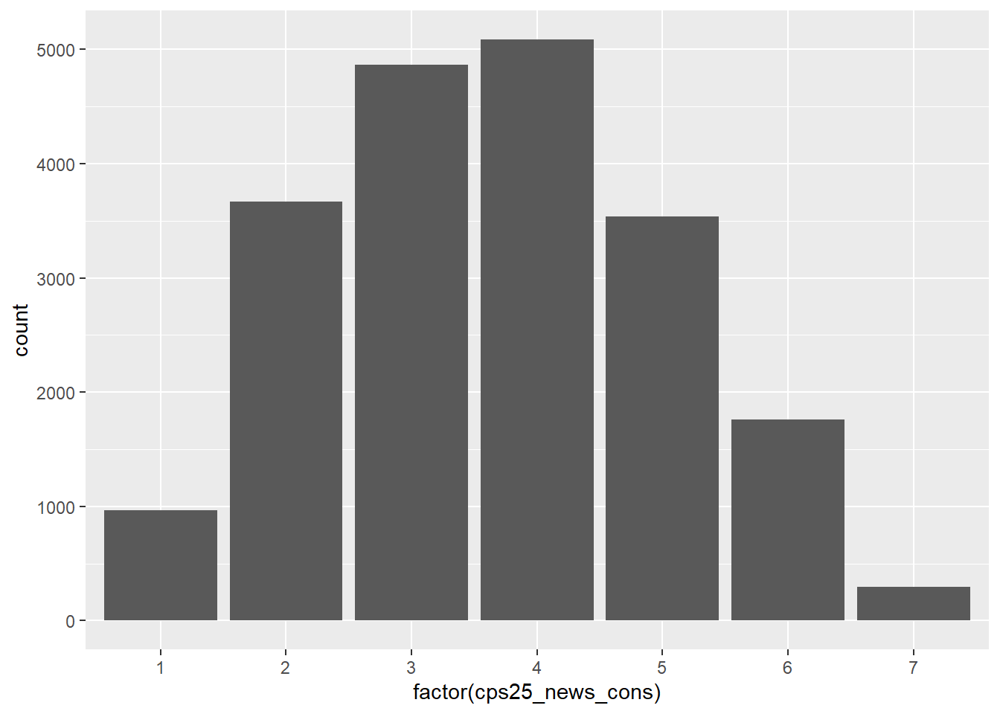
ab_korea |>
filter(is.na(us_good_harm) == FALSE) |>
ggplot(aes(x=factor(us_good_harm))) +
geom_bar()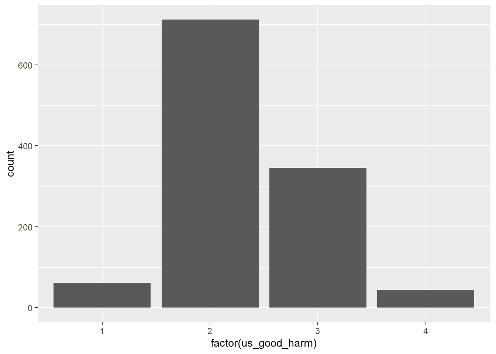